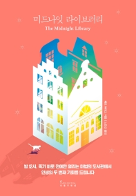

미드나잇 라이브러리
밤 12시, 죽기 바로 전에만 열리는 마법의 도서관에서 인생의 두 번째 기회를 드립니다.
어머니의 죽음, 파혼, 해고, 반려 고양이 볼츠의 죽음… 더 이상 삶을 견딜 수 없던 주인공 노라는 자살을 결심한다. 눈을 뜬 곳은 초록색 책들로 가득한 자정의 도서관. 친절하고 다정한 사서의 안내로 서가의 책이 모두 노라가 살았을지도 모르는 삶들을 담고 있음을 알게 되고 노라는 《후회의 책》을 펼쳐서, 가장 후회되는 순간 다른 선택을 했던 삶을 살아본다. 빙하학자, 뮤지션, 동네 펍 주인, 수영 선수가 되는 삶, 평범하지만 지루한 삶, 아이가 있는 삶 등등 가장 ‘완벽한 삶’을 찾을 때까지 수만 가지의 새로운 삶을 거친다. 그러나 노라는 자꾸만 ‘자정의 도서관’으로 돌아오게 되고, 무엇이 완벽한 삶인지 의문을 품는다. 20대에 심한 우울증을 겪으며 정신적 붕괴를 경험했던 작가 매트 헤이그는 ‘살아야 할 이유’에 대해서 끊임없이 고민해왔고, 신작 장편소설 《미드나잇 라이브러리》에서 자신만의 해답을 구한다.

리뷰
kksky
우리의 인생은 무한한 갈래로 나뉘어 갈 수 있다는 교훈을 준 책이다. 현재 우리의 선택에 따라서 우린 팝스타가 될수도 있고 세계적 운동선수가 될수도 있다. 하지만 그 어떤것도 아닐수도 있다.
junghi
시간여행을 소재로 한 소설은 언제나 흥미롭다. 특히 이 소설처럼 후회를 기반으로 다른 삶을 살아볼수 있다는 건 상상을 넘어 가슴 저릿한 희열을 느끼게 한다.